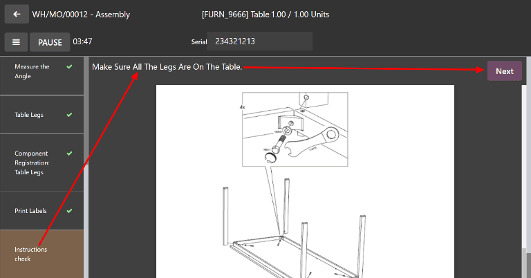

Instructions quality check¶
In Odoo Quality, an Instructions check is one of the quality check types that can be selected when creating a new quality check or quality control point (QCP). Instructions checks consist of a text entry field that allows the creator to provide instructions for how to complete the check.
For a full overview of how to configure a quality check or a QCP, see the documentation on quality checks and quality control points.
Process an Instructions quality check¶
There are multiple ways that Instructions quality checks can be processed. If a quality check is assigned to a specific manufacturing, inventory, or work order, the check can be processed on the order itself. Alternatively, a check can be processed from the check’s page.
Process from the quality check’s page¶
To process an Instructions quality check from the check’s page, begin by navigating to , and select a quality check. Follow the Instructions for how to complete the check.
If the product passes the check, click the Pass button above the quality check form. If the product does not pass the check, click the Fail button, instead.
Process quality check on an order¶
To process an Instructions quality check on an order, select a manufacturing order or inventory order (receipt, delivery, return, etc.) for which a check is required. Manufacturing orders can be selected by navigating to , and clicking on an order. Inventory orders can be selected by navigating to , clicking the # To Process button on an operation card, and selecting an order.
On the selected manufacturing or inventory order, a purple Quality Checks button appears above the order. Click the button to open the Quality Check pop-up window, from which any quality checks created for the order can be processed.

To complete an Instructions quality check, follow the instructions detailed in the Quality Check pop-up window. Finally, click Validate to confirm that the check has been completed.
If an issue or defect is found during the quality check, a quality alert may need to be created to notify a quality team. To do so, click the Quality Alert button that appears at the top of the manufacturing or inventory order after the check is validated.
Clicking Quality Alert opens a quality alert form on a new page. For a complete guide on how to fill out quality alert forms, view the documentation on quality alerts.
Process work order quality check¶
When configuring a QCP that is triggered by a manufacturing order, a specific work order can also be specified in the Work Order Operation field on the QCP form. If a work order is specified, an Instructions quality check is created for that specific work order, rather than the manufacturing order as a whole.
Quality checks configured for work orders must be completed from the tablet view. To do so, begin by navigating to . Select a manufacturing order that includes a work order for which a quality check is required. Open the tablet view for that work order by clicking the 📱 (tablet) button on the order’s line.
With tablet view open, complete the steps listed on the left side of the screen until the Instructions quality check step is reached. Upon reaching the check, the instructions for how to complete it will appear at the top of the screen. Follow the instructions, then click Next to move on to the next step.
If an issue or defect is found during the quality check, a quality alert may need to be created to notify a quality team. To do so, click the ☰ (menu) button in the tablet view, and then select Quality Alert from the Menu pop-up window.
Clicking Quality Alert opens a Quality Alerts pop-up window, from which a quality alert can be created. For a complete guide to quality alert creation, view the documentation on quality alerts.